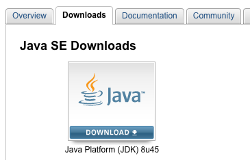

-
If you do not know if you have Java installed, refer to How can I find which version of Java is installed without running an applet in Windows or Mac? on java.com for instructions.
-
If you do not have Java installed, download the Oracle distribution of a Java JRE or JDK from oracle.com/technetwork/java/javase/downloads/index.html.
